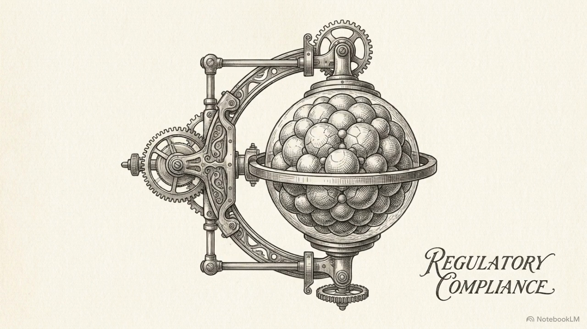
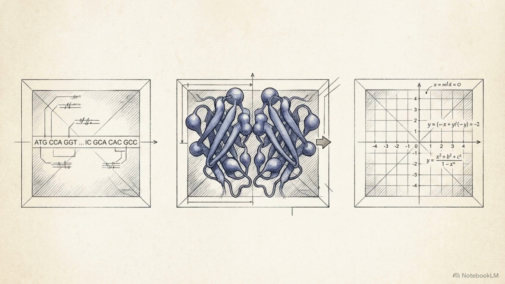

GH-VID-KINE-001 — Code as physics (kinematic pipeline)
Wiki: use the poster image + link to this anchor for reviewers; do not embed <video> in wiki Markdown.
Document: GH-MEDIA-HEALTH-001 · GitHub Pages · Patents: USPTO 19/460,960 · USPTO 19/096,071 — © 2026 Richard Gillespie
Controlled narration surface. The GitHub Wiki does not render HTML5 <video> and must not be treated as a media player.
This page (served from /docs on main) is the professional location for thumbnail + checksum + download + in-browser review aligned with GAMP 5 evidence discipline.
Videos load from same-origin paths under docs/media/ (reliable playback); raw.githubusercontent hotlinks are offered only as optional direct downloads.
| ID | Thumbnail | Title | SHA-256 (MP4) |
|---|---|---|---|
GH-VID-KINE-001 |
 |
Code as physics — GaiaHealth kinematic pipeline | c9f64c276a5f19d4ced52e599751322b61a261124b0586cf527b62fc453ec456 |
GH-VID-CURE-001 |
 |
Engineering the CURE — The GaiaHealth State Machine | 3e5cd07ef293952ce442ac943fbd7e0941ac5d7e5f41bd0e0d027775fb819b1b |
Wiki: use the poster image + link to this anchor for reviewers; do not embed <video> in wiki Markdown.
SHA-256 verification (OQ evidence): shasum -a 256 must match the table above after download.
Index of all walkthroughs: docs/index.html · Repository: gaiaFTCL